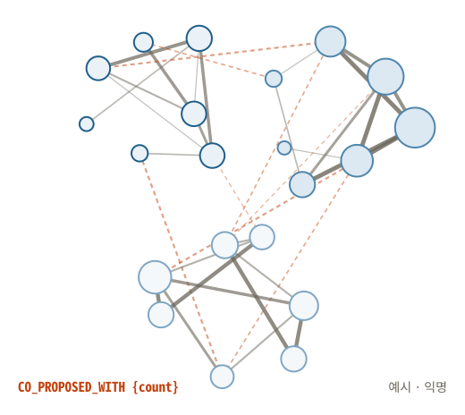
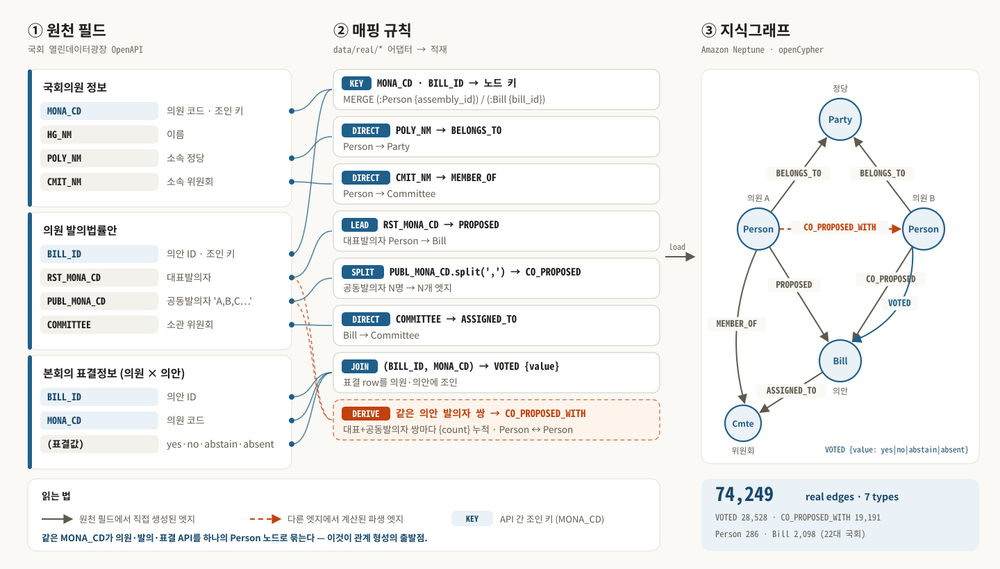
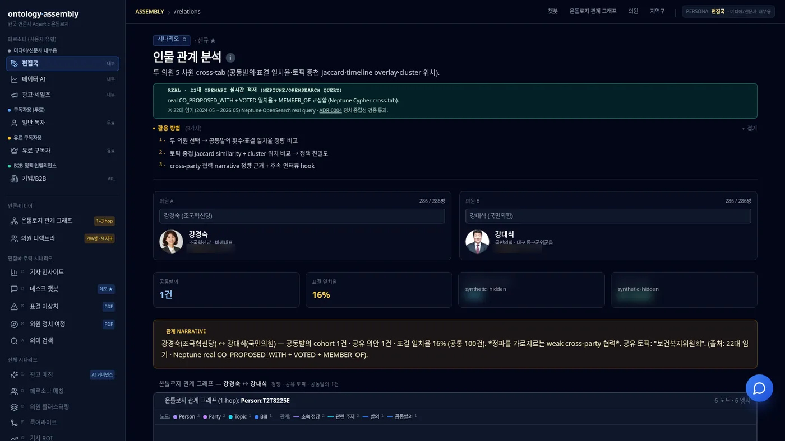
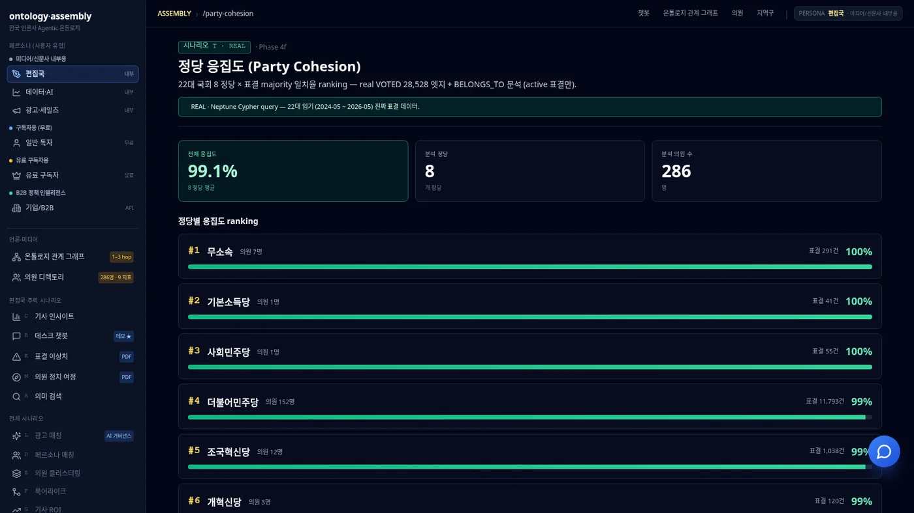
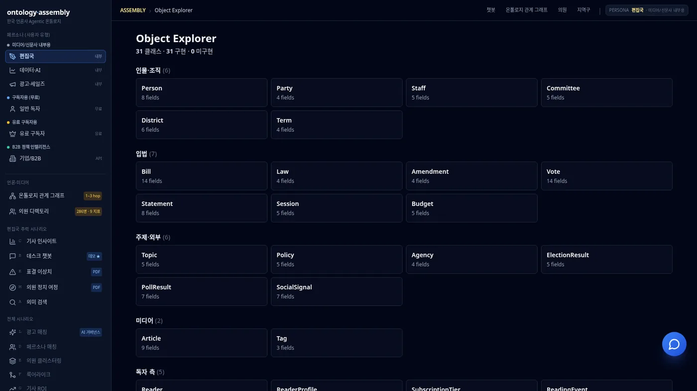
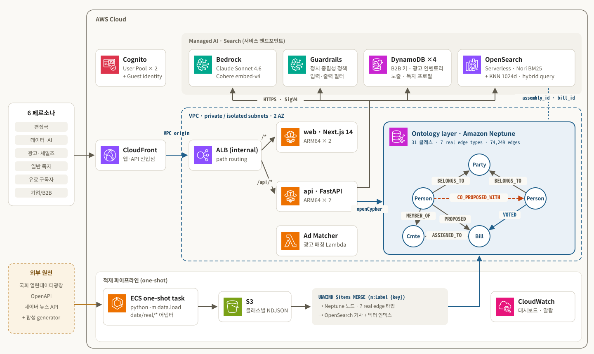

01 · IDENTITY
하나의 식별자로 묶는다
의원 정보·발의·표결 API가 모두 쓰는 MONA_CD(의원 코드)와 BILL_ID(의안 ID)를 노드 키로 삼아, 서로 다른 API의 행을 하나의 Person·Bill 노드로 합칩니다.
의원·의안·표결·위원회·정당을 31 클래스 온톨로지로 모델링하고, 국회 OpenAPI 필드에서 7종 관계를 만들어 Amazon Neptune에 적재합니다. "누가 누구와 함께 발의했고, 정당 노선과 다르게 표결했는가"를 검색이 아니라 관계 탐색으로 답합니다.

count, 노드 크기 = 가중치 합 (예시 · 익명)텍스트 검색(RAG)은 기사·의안 본문에서 비슷한 문장을 찾는 데 강하지만, 아래 같은 질문은 여러 API의 행(row)을 이어 붙여야 답이 나옵니다. 온톨로지는 그 "이어 붙이는 규칙"을 먼저 정의해 두는 일입니다.
의원 정보·발의·표결 API가 모두 쓰는 MONA_CD(의원 코드)와 BILL_ID(의안 ID)를 노드 키로 삼아, 서로 다른 API의 행을 하나의 Person·Bill 노드로 합칩니다.
표결은 VOTED {value}, 공동발의 네트워크는 CO_PROPOSED_WITH {count}처럼 엣지가 속성을 가집니다. 일치율·응집도·영향력은 이 엣지 속성의 집계입니다.
관계는 Neptune(openCypher), 기사 본문은 OpenSearch Serverless(Nori BM25 + Cohere 벡터)에 두고 assembly_id·bill_id 도메인 키로 연결합니다.
비슷한 문서를 찾아 요약 — 관계는 추측
검색·그래프 도구를 호출해 사실 확인
Planner → Graph → Analyst → Editor 다중 에이전트가 관계를 따라 추론
왼쪽은 국회 열린데이터광장 API가 돌려주는 원천 필드, 가운데는 data/real/* 어댑터의 매핑 규칙, 오른쪽은 그 결과로 Neptune에 생기는 지식그래프입니다. 같은 MONA_CD가 세 API를 하나의 의원 노드로 묶는 것이 출발점입니다.

모바일에서는 다이어그램을 세로로 회전해 표시합니다. 글자가 작으면 위 "원본 SVG 열기"로 확대해 보세요.
MONA_CD→Person, BILL_ID→Bill. openCypher MERGE로 중복 없이 하나의 노드.
값이 곧 대상 노드: 정당명 POLY_NM, 위원회 CMIT_NM·COMMITTEE.
PUBL_MONA_CD의 콤마 목록을 나눠 공동발의자마다 엣지 1개.
표결 행을 (BILL_ID, MONA_CD)로 의원·의안에 연결, 표결값은 엣지 속성.
같은 의안의 대표·공동발의자 쌍을 세어 의원↔의원 CO_PROPOSED_WITH {count}.
| 관계 | 방향 | 원천 | 형성 규칙 | 엣지 수 |
|---|---|---|---|---|
PROPOSED | 방향Person → Bill | 원천RST_MONA_CD | 규칙LEAD · 대표발의자 1명 | — |
CO_PROPOSED | 방향Person → Bill | 원천PUBL_MONA_CD | 규칙SPLIT · 콤마 목록 → 공동발의자별 엣지 | — |
CO_PROPOSED_WITH | 방향Person ↔ Person | 원천파생 | 규칙DERIVE · 같은 의안 발의자(대표+공동) 쌍, {count} 누적 | 19,191 |
VOTED | 방향Person → Bill | 원천본회의 표결정보 | 규칙JOIN · (BILL_ID, MONA_CD), {value: yes|no|abstain|absent} (찬성·반대·기권·불참) | 28,528 |
MEMBER_OF | 방향Person → Committee | 원천CMIT_NM | 규칙DIRECT · 의원당 1–3 위원회 | — |
BELONGS_TO | 방향Person → Party | 원천POLY_NM | 규칙DIRECT · 소속 정당 | — |
ASSIGNED_TO | 방향Bill → Committee | 원천COMMITTEE | 규칙DIRECT · 소관 위원회 | — |
입력 · 의원 발의법률안 API 한 행 (예시)
// 값은 설명용 예시 { "BILL_ID": "B-001", "RST_MONA_CD": "M-A", "PUBL_MONA_CD": "M-B,M-C", "COMMITTEE": "보건복지위원회" }
출력 · 생성되는 노드와 엣지
// KEY (:Bill {bill_id:'B-001'}) // LEAD · SPLIT · DIRECT (M-A)-[:PROPOSED]->(B-001) (M-B)-[:CO_PROPOSED]->(B-001) (M-C)-[:CO_PROPOSED]->(B-001) (B-001)-[:ASSIGNED_TO]->(:Committee) // DERIVE · 발의자 쌍마다, 의안 간 누적 (M-A)-[:CO_PROPOSED_WITH {count:+1}]-(M-B) // (M-A,M-C) · (M-B,M-C) 쌍도 동일
모든 노드는 source ∈ {real, synthetic, external} 속성을 가져, 화면과 응답에서 실데이터와 합성 데이터를 구분합니다. 현재 국회 OpenAPI에서 실제 적재되는 클래스는 5개이고, 나머지는 시나리오 시연을 위한 합성·placeholder입니다.
같은 엣지를 다른 모양으로 매칭하면 서로 다른 질문에 답합니다. 모든 Cypher는 사용자 입력을 parameters로만 전달합니다.
두 의원이 함께 표결한 의안 중 같은 값을 낸 비율 — 시나리오 O
MATCH (pa:Person {assembly_id:$a})
-[va:VOTED]->(b:Bill)
<-[vb:VOTED]-
(pb:Person {assembly_id:$b})
RETURN count(b),
sum(CASE WHEN va.value = vb.value
THEN 1 ELSE 0 END)
의안별 정당 다수결과 같은 표결의 비율 — 시나리오 T
MATCH (p:Person)-[v:VOTED]->(b:Bill) OPTIONAL MATCH (p)-[:BELONGS_TO]->(pa:Party) RETURN p.assembly_id, pa.name, v.value, b.bill_id // 정당×의안 다수결 집계
공동발의 네트워크 가중치 합으로 허브 의원 — 시나리오 U
MATCH (p:Person)
-[r:CO_PROPOSED_WITH]-(:Person)
WITH p, sum(r.count) AS cohort_weight
ORDER BY cohort_weight DESC
LIMIT $cap
RETURN p.assembly_id, cohort_weight
23개 시연 시나리오(A–W) 중 실데이터 엣지를 직접 순회하는 대표 시나리오입니다. 편집국·데이터·광고·독자·구독자·B2B 6개 페르소나가 같은 그래프를 각자의 KPI로 봅니다.
두 의원 사이의 공동발의 횟수, 공유 의안, 표결 일치율, 공통 위원회를 한 화면에서 비교합니다.
CO_PROPOSED_WITH · VOTED · MEMBER_OF22대 국회 정당별로 의원 표결이 정당 다수결과 얼마나 일치하는지 순위로 보여줍니다.
VOTED · BELONGS_TO공동발의 네트워크 가중치와 발의 활동으로 법안 협업의 허브를 찾습니다.
CO_PROPOSED_WITH · PROPOSED · CO_PROPOSED정당 계열과 의원별 찬성률 패턴으로 의원을 분류해 표결 성향의 분포를 보여줍니다.
VOTED · BELONGS_TO소속 정당 다수결과 다르게 표결한 비율이 높은 의원을 찾아 취재 단서로 제공합니다.
VOTED · BELONGS_TONori BM25와 Cohere 벡터 KNN을 hybrid query로 결합해 검색한 뒤, 최상위 결과를 관계 그래프로 펼칩니다.
OpenSearch → 1-hop subgraph데모 화면입니다. 화면 상단의 REAL 배지가 붙은 지표는 22대 국회 OpenAPI에서 적재한 엣지를 Neptune에서 직접 질의한 결과이고, 그 밖의 활동 지표·토픽·일부 노드는 시연용 합성 데이터입니다.



웹·API 트래픽의 진입점은 CloudFront 하나이고, VPC origin으로 internal ALB에 연결됩니다. API는 Neptune 온톨로지 계층을 openCypher로 질의하고, 검색과 생성은 OpenSearch Serverless와 Amazon Bedrock이 맡습니다.

모바일에서는 다이어그램을 세로로 회전해 표시합니다. 글자가 작으면 위 "원본 SVG 열기"로 확대해 보세요.
CloudFront → VPC origin → internal ALB. 인터넷에 노출된 로드밸런서가 없습니다.
ECS Fargate ARM64 web·api 각 2 task. /api/*는 FastAPI, 나머지는 Next.js.
Neptune(isolated subnet)에 7종 real 엣지. OpenSearch와 도메인 키를 공유합니다.
같은 API 이미지가 one-shot task로 data.load 실행 → S3 NDJSON → UNWIND … MERGE.
온톨로지 설계, OpenAPI 어댑터, Cypher 쿼리, CDK 인프라까지 전부 공개되어 있습니다. 저장소에서 구조를 확인하고 데모에서 직접 관계를 펼쳐 보세요.
공개 데모의 LLM 응답·검색은 결정적 fixture로 동작하며, REAL 시나리오(O·T·U·V·W)의 그래프 쿼리는 실제 Neptune에서 실행됩니다.